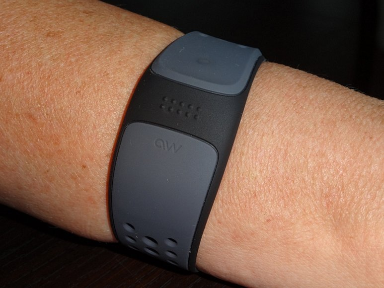
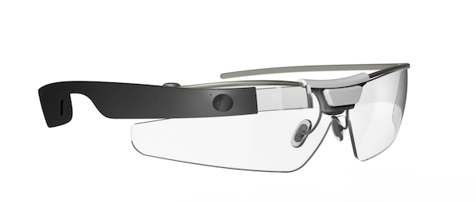
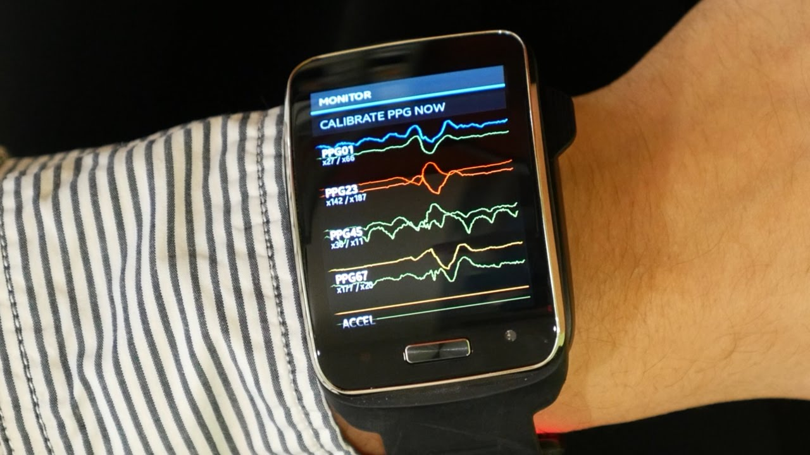
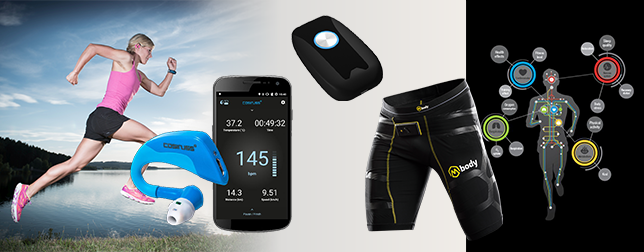

Het probleem is tegenwoordig dat mensen niet meer veel met elkaar praten. Dat kan verschillenden soorten oorzaken hebben. Eén daarvan kan zijn dat mensen niet weten waar ze over moeten praten. Als voorbeeld nemen we een date tussen twee mensen. Dit is altijd een spannende avond voor twee mensen. Er vallen stiltes en dat wil je juist voorkomen. Daar zal dit concept een oplossing voor kunnen zijn. Het kan op elke locatie gebruikt worden, zo buiten als binnen.
De concept is een wearables dat om de pols zit en in de bril zit. Als twee mensen elkaar de handschut of een bepaalde beweging maken kunnen ze allebei informatie over de andere krijgen. De informatie zal in de bril laten zien worden. De personen kunnen door de informatie die ze binnen krijgen zien wat voor persoon het is. Er kan een betere conversatie komen omdat ze weten waar de andere geïnteresseerd in is. Dit kan ook gebruikt worden tijdens een date of een avond uit. Het zorgt ervoor dat er een betere communicatie tussen twee mensen is en dat ze kunnen praten over dingen waar de andere in geïnteresseerd is. Ze zullen hierdoor elkaar beter leren kennen.
Om de pols zit een bandje met een chip erin. Die kan ingesteld worden met de informatie die verstuurd mag worden naar een andere persoon. Als twee mensen elkaar de handschut of een bepaalde beweging maken wordt de informatie verstuurd. De bewegingssensor zit hierin die wordt geactiveerd al er een beweging wordt gemaakt. De informatie zal verstuurd worden naar de bril van de andere persoon. In de bril zit een protector die de informatie laat zien.


Hartslag meter
Dit is een wearable dat om de pols gedragen kan worden. Mensen met hart problemen kunnen dit apparaat gebruiken om hun hartslag in de gaten te houden. Omdat het systeem de hartslag constant in de gate houd kan er geen gevaarlijke situaties ontstaan. Als er iets met een hart van een hartpatiënt is zal het systeem een geluid maken of gaan trillen. Er kan ook gelijk een bericht gestuurd worden naar de verzorger of een familie lid. Op deze manier kunnen er mensen op tijd bij de persoon aankomen en helpen.

Rennen/ Sporten
Een wearable dat om de pols kan en die in de broek zit bevestigd. Dit is een systeem die bijhoud hoeveel kilometer iemand heeft gerend. In de broek zitten sensoren die dit exact bijhoudt. De gegevens worden opgestuurd naar de band om de pols en naar de app op de telefoon. Op de manier kan iemand een melding krijgen en op een makkelijke manier bijhouden hoeveel er gerend is.

Dit was een leuke topic over wearables. Voordat de topic was uitgelegd wist ik niet veel van de term wearables. Ik wist dat er apparaten waren die gebruikt worden voor het sporten. Alleen wist ik niet dat het een naam had. Tijdens het hoorcollege werden er een paar dingen verteld over dit onderwerp. Het was erg interessant wat mensen allemaal voor apparaten maken. Ik ben meer te weten gekomen over de google glasses en andere apparaten die gebruikt worden.
Het is een uitdagend onderwerp waar veel mee gedaan kan worden. Mensen willen niet altijd grote laptops of tablets hebben. Die kleine wearables zijn ideaal voor een hoop mensen. Het is compact en klein waardoor het voor veel dingen gebruikt kan worden. In de toekomst zal er een hoop nieuwe wearables uitvonden worden.